BOI STEM++
B0C690121: การพัฒนาระบบทดสอบแบบอัตโนมัติสำหรับ
แผงวงจรควบคุมด้วย LabVIEW, TestStand และ myRIO
July 21, 2569
Course outline
-
- Automated Test Equipment
- การเข้าจังหวะและส่งผ่านข้อมูลด้วย LabVIEW
- การสร้างสัญญาณทดสอบด้วย NI myRIO
- workshop: การเชื่อมต่อ DUT
-
- การเชื่อมต่อเครื่องมือวัด
- ไดรเวอร์ DAQmx และ VISA
- การวิเคราะห์/บันทึกข้อมูล
- workshop: การเชื่อมต่อและควบคุมเครื่องมือวัด
-
- หลักการ sequence และ action step
- การใช้งาน code module
- การสร้างรายงานด้วย TestStand
- workshop: การทดสอบ
-
- กรณีศึกษาของการทดสอบในอุตสาหกรรม
- workshop: LabVIEW + TestStand from scratch
Training tools
NI LabVIEW
- Graphical programming environment
- Connect to instruments via DAQmx, VISA, PXI, camera
- Use engineering analysis functions
NI TestStand
- Manage validation and production tests
- Build, organize, and monitor test sequences
- Support NI LabVIEW, C/C++, .NET, and Python as test code
Problem-based learning #1
ADS1115 module as DUT
- 16-bit Delta-Sigma ADC:
- upto 860 samples/sec
- I2C interface:
- 4 device addresses
- 2 differential or 4 single-ended inputs
- Programmable Gain Amplifier (PGA):
- ±256mV to ±6.144V
- Supply voltage: upto 5.5V
- Comparator → ALERT/RDY pin
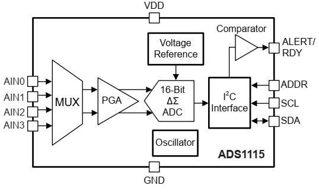
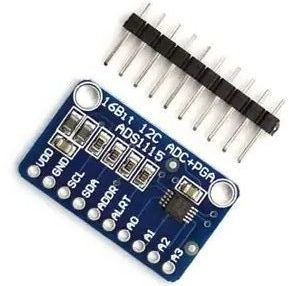
Problem-based learning #2
RPi Pico 2WH as UUT
- RP2350 (ARM Cortex-M33 x 2) + 4 MB Flash + 520 KB RAM + WiFi/BLE 2.4 GHz
- 23 digital pins (2 x UART + 2 x I2C + 2 x SPI) + 3 analog pins (ADC)
Standard Commands for Programmable Instruments: SCPI protocol
- โปรโทคอลสำหรับสื่อสารกับเครื่องมือวัดในรูปแบบ ASCII
- SCPI parser: เป็นโค้ด ANSI C
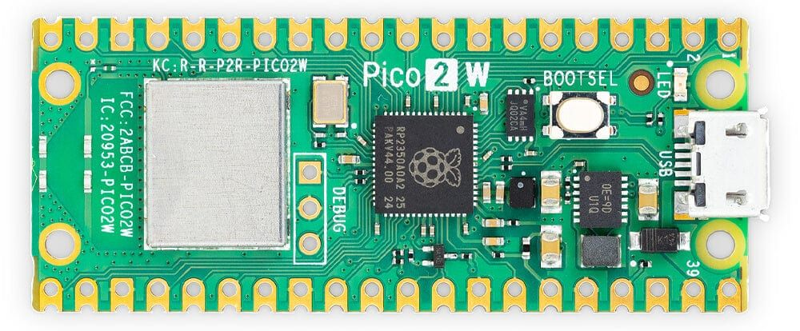
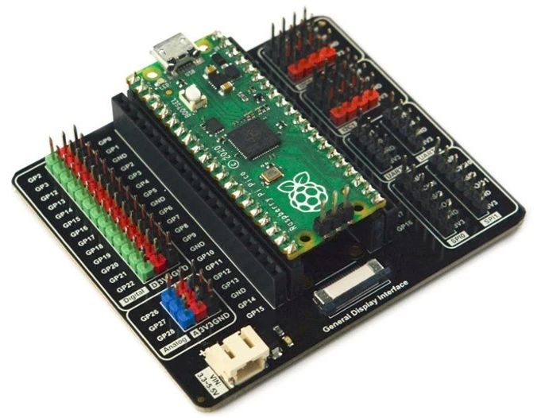
Problem-based learning #3
LM321 operational amplifier as DUT
- 3V < supply voltage < 30V
- Bandwidth: 1 MHz, slew rate: 0.5 V/µs
- Offset voltage: 7 mV, bias current: 0.25 µA
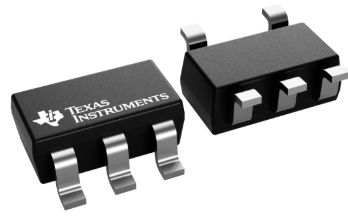
Servo-loop configuration
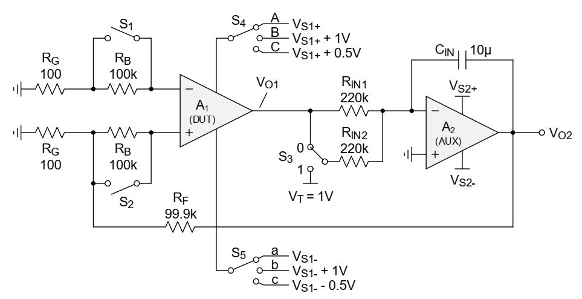
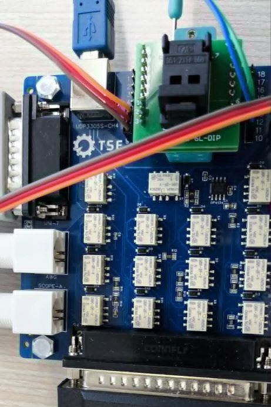
Further learning
- LabVIEW Community Edition เป็นรุ่นสำหรับการเรียนรู้ด้วยตัวเอง
- Getting Started with the LabVIEW Hobbyist Toolkit: แพคเกจสำหรับเชื่อมต่อ LabVIEW กับบอร์ด Arduino และ Raspberry Pi
- Element 14 LabVIEW Challenge Blogs: แนะนำ hardware abstraction layer เชื่อมต่อไมโครคอนโทรลเลอร์
- PyVISA: ไลบรารี Python สำหรับควบคุมเครื่องมือวัดผ่าน NI VISA
- nidaqmx: ไลบรารี Python สำหรับอ่าน/สร้างสัญญาณผ่าน NI DAQmx
1. ATE overview
Automated Test Equipment (ATE)
Computer-controlled systems that automatically measure and evaluate functional, structural, or electrical performance on electronic devices
- Usability / Reusability / Maintainability / Performance
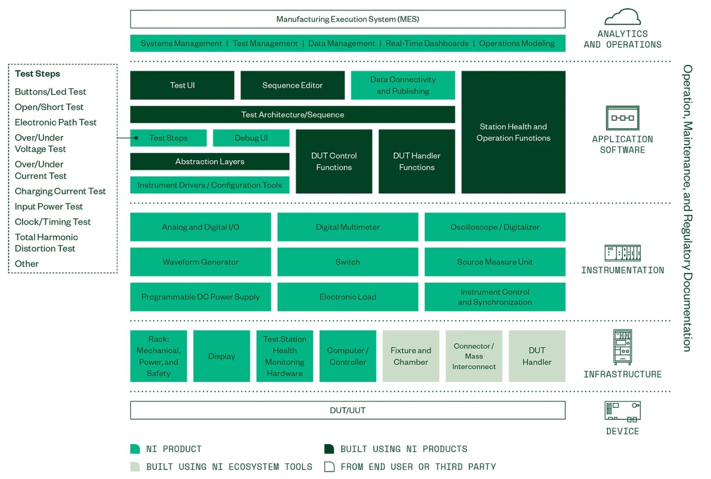
ATE for semiconductor products
ETS-800 D20: Two sectors, 20-slots
- HSD-64: 64 digital channels
- 200 MValue/sec
- -2V to +12V, 32mA PPMU
- APU-32A: floating 32 low-power VI channels
- 30V to +80V, 200mA VI
- SPU-8112: floating 8 high power VI channels
- ±100V, 2A DC
- QMS: 4 differential digitizer
- 12-bit at 10 Msps, ±200V floating
- MCMUX: 64-channel MUX
- 200V, 2A
ATE for PCB products1
Automated Optical Inspection (AOI)
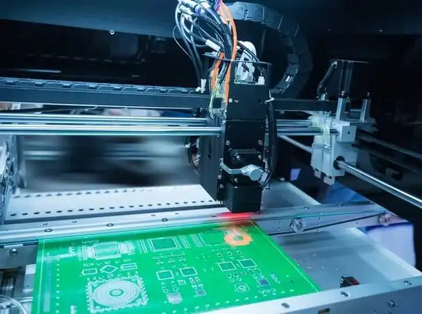
Electrical testing → ICT or Flying probe
- Continuity Testing (Short Testing)
- Insulation Resistance Testing
- Impedance Testing: Time-domain reflectometry (TDR)
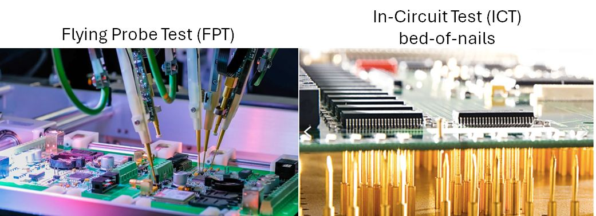
ATE for PCBA products1
Automated Optical Inspection (AOI)
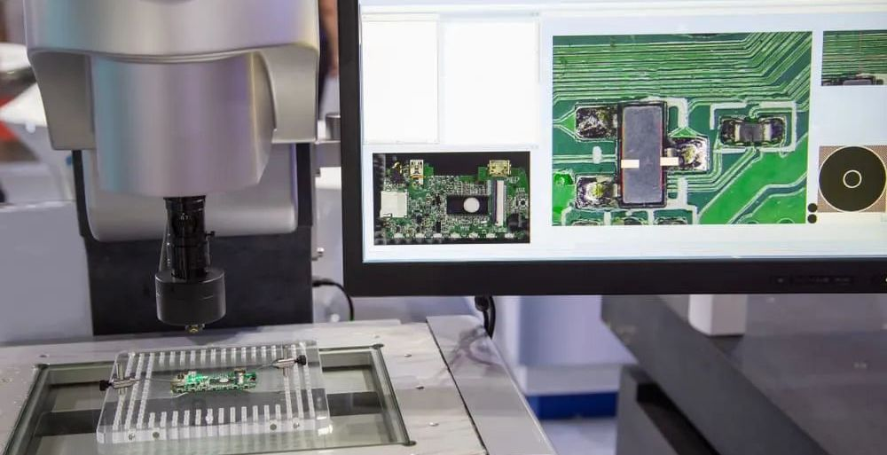
PCB X-Ray Inspection
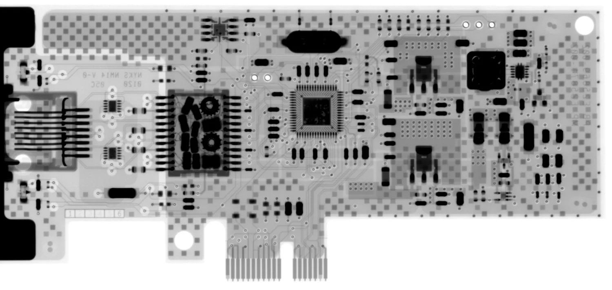
Electrical testing
- Flying Probe Test (FPT) → PCB trace, component values
- In-Circuit Testing (ICT) → electrical signals at test points
- Functional Testing (FCT)
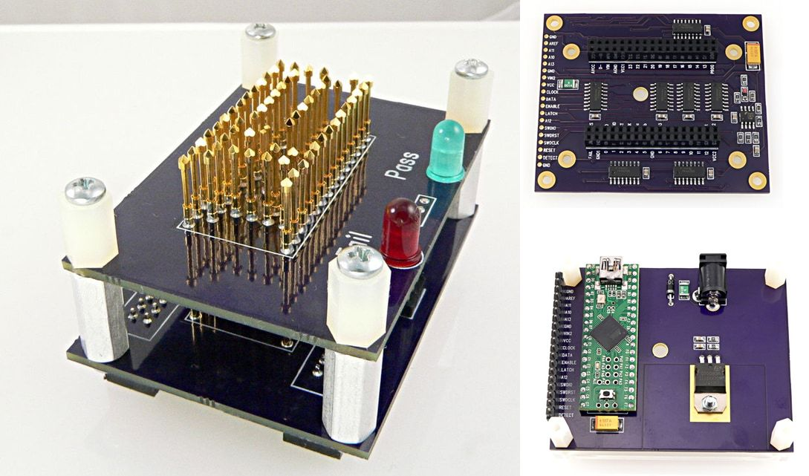
ATE for appliance products
Requirements ← Safety/Energy efficiency/Endurance/… standards
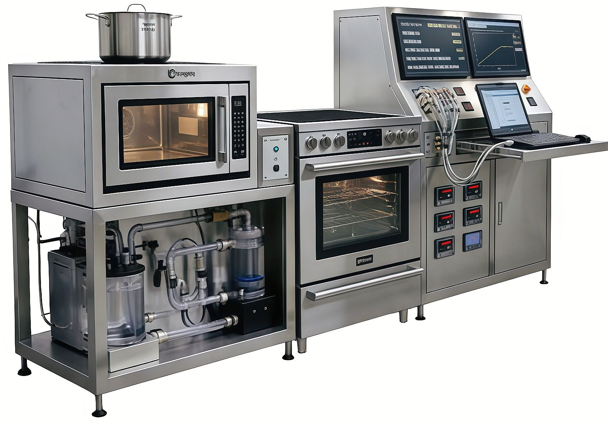
Semiconductor terminology
- DUT (Device Under Test) / UUT (Unit Under Test) อุปกรณ์ที่ถูกทดสอบ
- DPS (Device Power Supplies) แหล่งจ่ายไฟเลี้ยงให้ DUT
- PMU (Parametric Measurement Unit) อุปกรณ์สำหรับวัด DC characteristics ของ DUT
- PPMU (Per Pin Measurement Unit) PMU ที่ต่อกับขาของ DUT
- DIB (Device Interface Board) / Load Board ส่วนเชื่อมต่อกับ DUT
- HANDLER อุปกรณ์หยิบจับชิป (Die) ใส่ซ็อคเก็ต
- PIB (Probe Interface Board) โพรบที่เชื่อมต่อเวเฟอร์
- Probe Card แผงวงจรที่ต่อกับโพรบ
- PROBER อุปกรณ์เลื่อนชิป (Die) ไปที่โพรบ
- VCC (+ ICC) ไฟเลี้ยง TTL
- VDD (+ IDD) ไฟเลี้ยง CMOS
- VSS ทางกลับของไฟเลี้ยง
- VIH / VIL แรงดันเข้าสำหรับ logic 1 / 0
- VOH / VOL แรงดันออกสำหรับ logic 1 / 0
- IOH / IOL กระแส source / sink สำหรับ logic 1 / 0
- IIH / IIL กระแส leakage สำหรับ logic 1 / 0
- IOZH / IOZL กระแส leakage ในสถานะ high-Z สำหรับ logic 1 / 0
Digital logics vs electrical signals
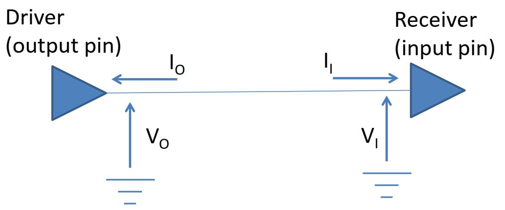
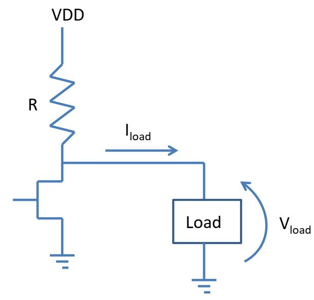
| Logic | Voltage |
|---|---|
| Out = 1 | \(V_O\) > \(V_{OH}\) |
| Out = 0 | \(V_O\) < \(V_{OL}\) |
| In = 1 | \(V_I\) > \(V_{IH}\) |
| In = 0 | \(V_I\) < \(V_{IL}\) |
| Logic | Transistor | Voltage |
|---|---|---|
| Out = 1 | OFF | \(V_{load}\) = \(V_{DD} - I_{load} * R\) |
| Out = 0 | ON | \(V_{load}\) ≅ 0 = \(I_{load} * R\) |
Semiconductor test concepts
ATE pin ⇆ DUT
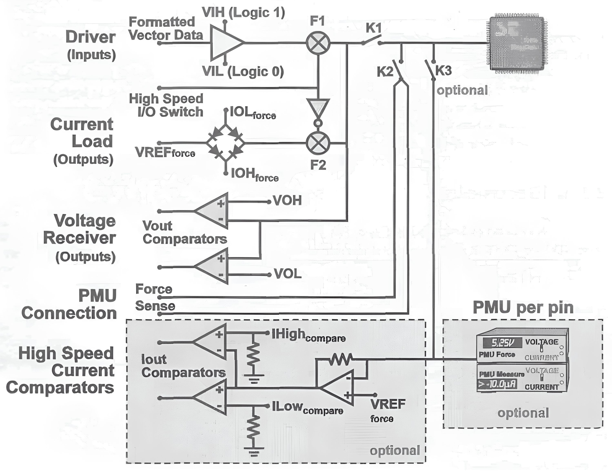
Subsystems:
- Device Power Supply (DPS)
- Reference Voltage Supplies (RVS)
- Parametric Measurement Unit (PMU)
Concepts
- Force voltage → sense current
- Force current → sense voltage
Microcontroller pin
Multiplexed I/O pin
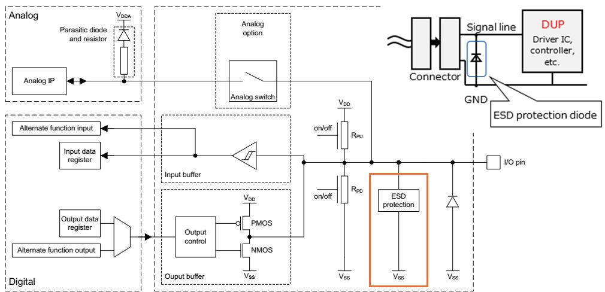
Open/short test
Die test: ESD diode
- Force current (เช่น +100 µA) เข้า pin
- Measure voltage:
- PASS: ประมาณ 0.6–0.8 V
- Short: ใกล้ 0V
- Open: เพิ่มถึงค่า V limit
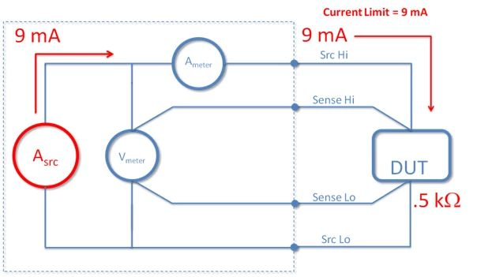
PCB/PCBA test
- วัดระหว่าง 2 test point
- ผลกระทบของ trace, solder, การเชื่อมต่อบน PCB
- Force voltage, measure current → ความต้านทาน
- ต่ำมาก = short / สูงมาก = open
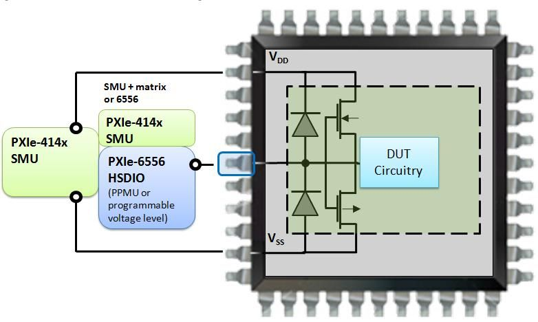
- ต่ำมาก = short / สูงมาก = open
Pin electronics1
SMU (Source Measure Unit)
- Operating modes:
- 2 quadrants (source only)
- 4 quadrants (source and sink)
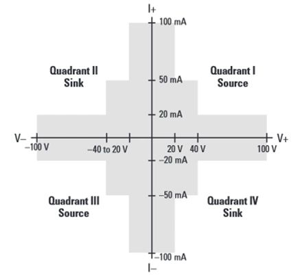
PPMU (Pin Parametric Measurement Unit)
- Operating modes:
- Force voltage, measure current
- Force current, measure voltage
- Less precision, no programmable limits, but higher speed, and more channels
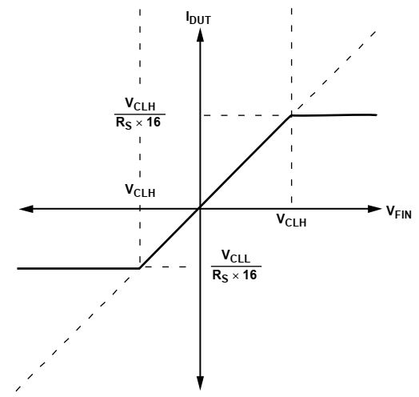
DC parametric test
IDD testing
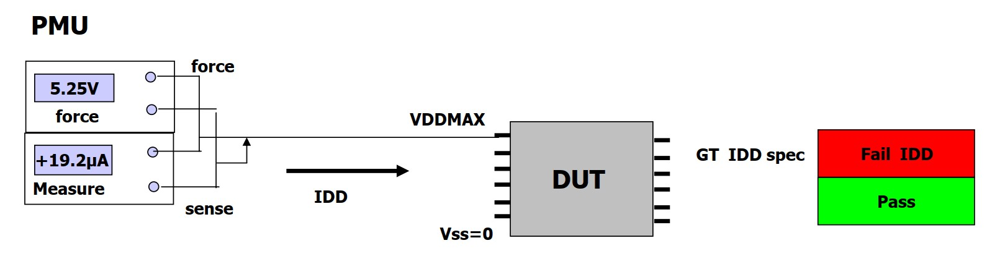
VOL/IOL Testing
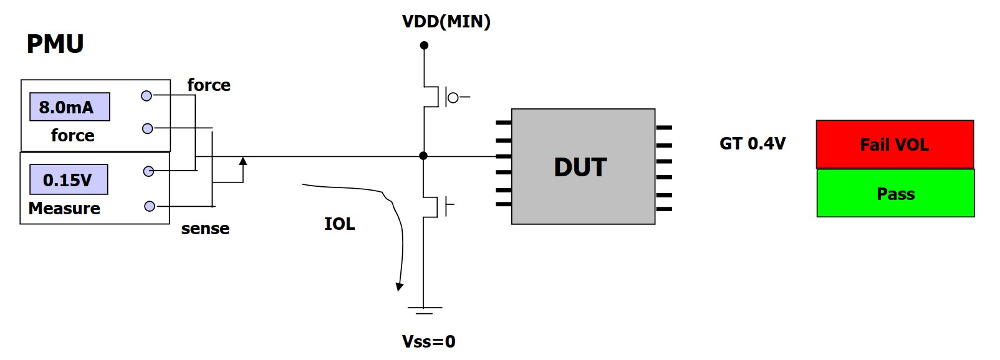
AC parametric test
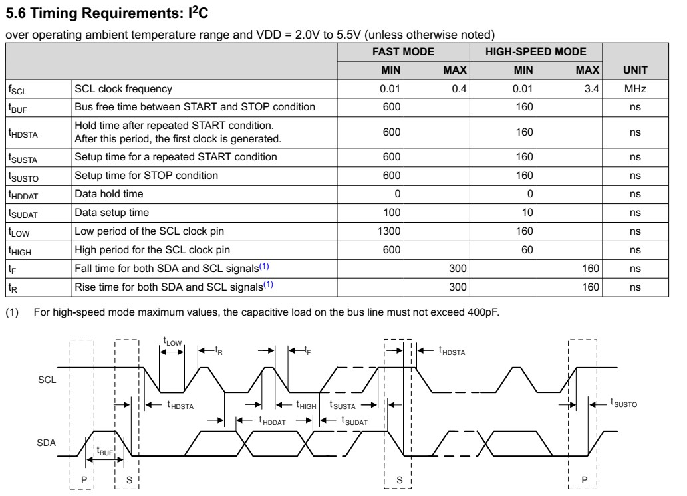
Functional testing: digital DUT
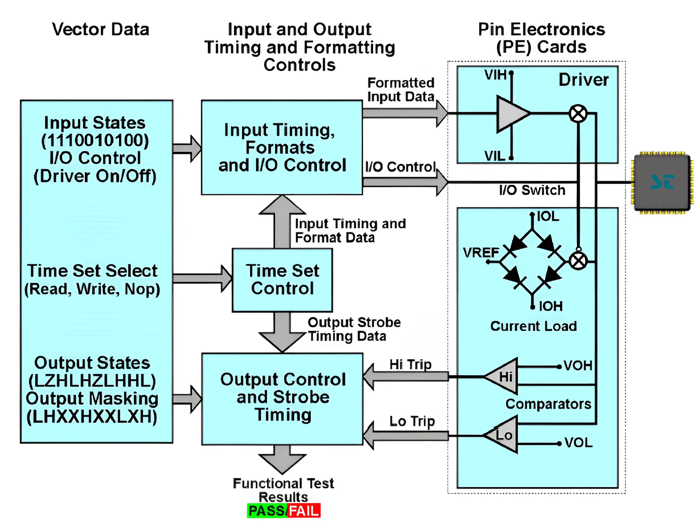
Test vector
Timing and a series of input (0/1) - output (L/H/Z) combinations
Die testing → bin distribution
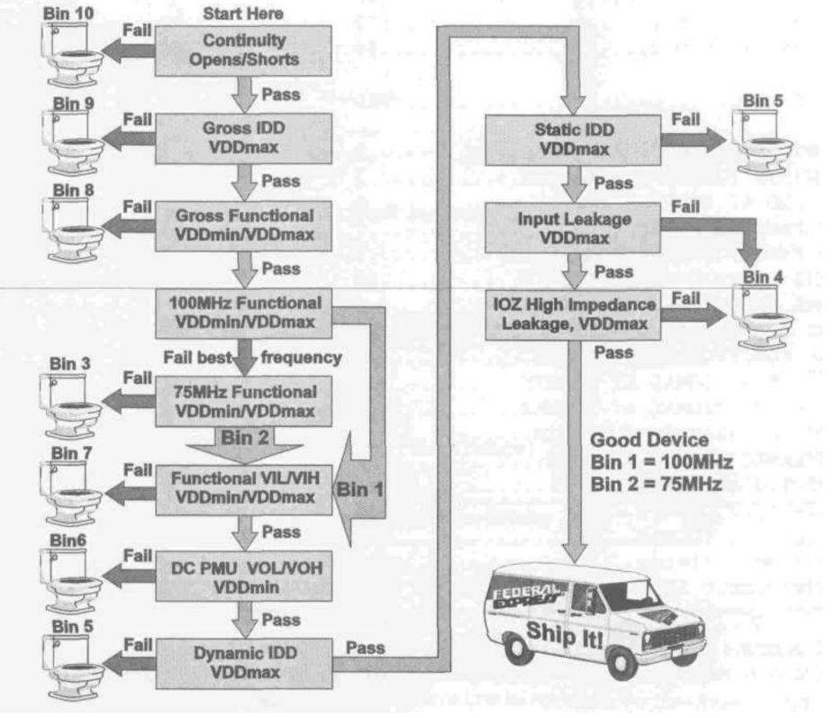
Testing flow
- Continuity test: Open/Short Test
- DC parametric test:
- Functional test:
- AC parametric / timing test :
Bin distribution
- Bin 01: good device
- Bin 02: okay device
- Bin xx: ??? reject
- …
PCBA testing → PASS/Scrap/Rework
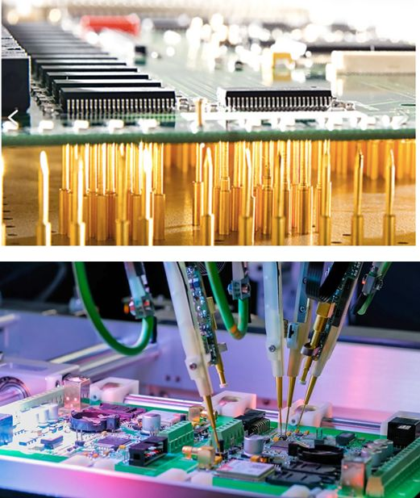
Testing flow
- Continuity: Open/Short test
- Component verification: RLC, diode
- Power-up verification: VDD → IDD
- Functional test:
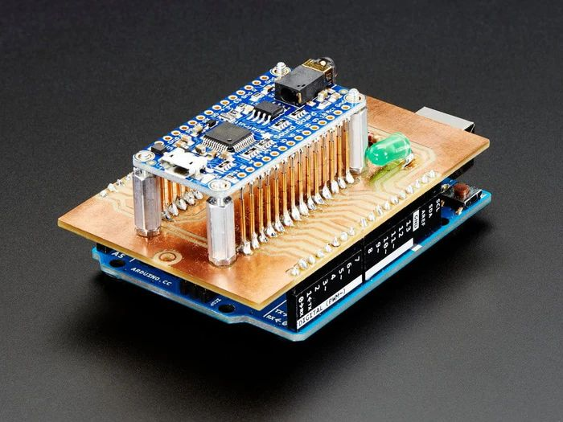
2. LabVIEW quick recap
Why LabVIEW?
Hardware interfacing
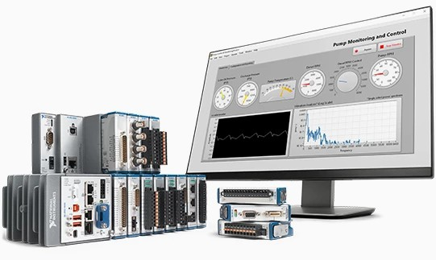
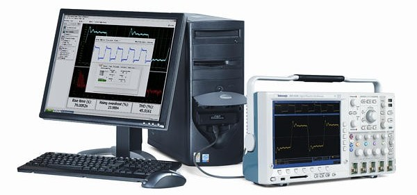
Virtual Instrument → UI
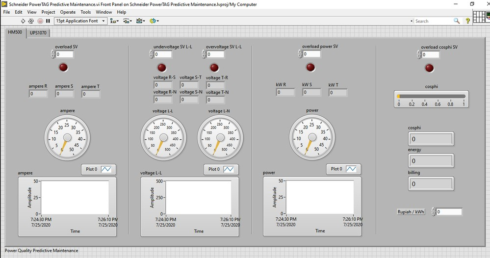
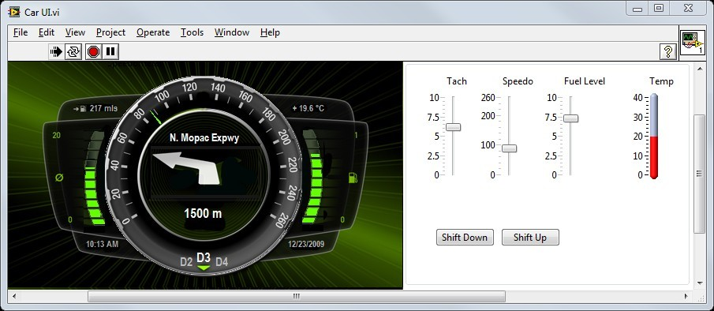
NI MAX
Measurement & Automation Explorer ใช้ตั้งค่าและตรวจสอบเครื่องมือวัด/DAQ/PXI
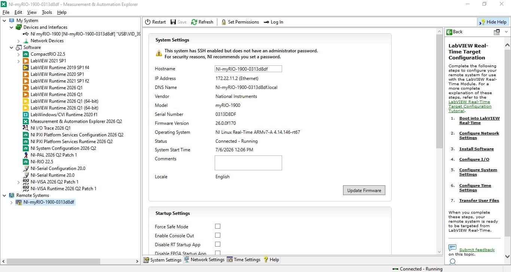
Why LabVIEW for ATE?
NI-DAQmx
- NI instrument driver that controls DAQ systems
- Library of VIs, functions, classes, attributes, and properties to configure, control, stream data


NI-VISA
- Virtual Instrument Software Architecture
- Instrument driver and software API used to configure, program, and control instruments
- Interfaces: USB, Ethernet, GPIB, Serial.

NI-PXI
- HW/SW platform built for test automation
- Synchronize across multiple modules or chassis
- PXI embedded controller = PC inside PXI

LabVIEW
Front panel: ส่วนหน้าจอ
- ประกอบด้วย Controls (รับคำสั่ง/ข้อมูล) และ Indicators (แสดงผล)
- ทำงานแบบ interactive
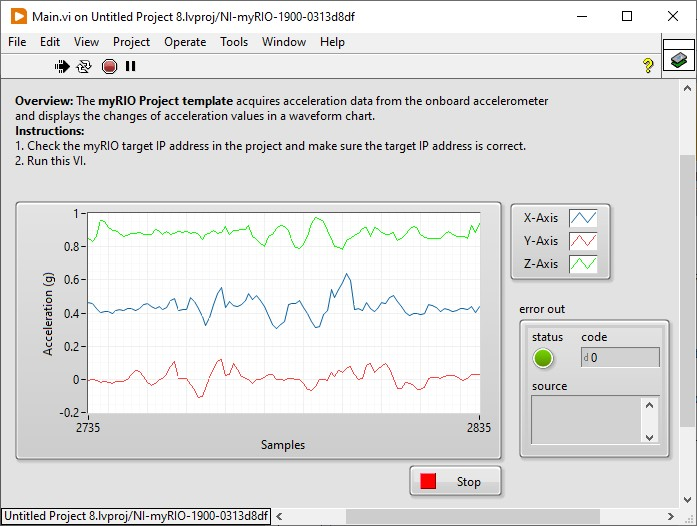
Block diagram: ส่วนโค้ด
- GUI style → drag & drop แล้ว connect
- Execution → dataflow programming
- (รอ) ข้อมูลเข้า → ประมวลผลและส่งต่อ
- ทำงานแบบ parallel loop ได้
- แนะนำไล่จาก ซ้าย ไป ขวา
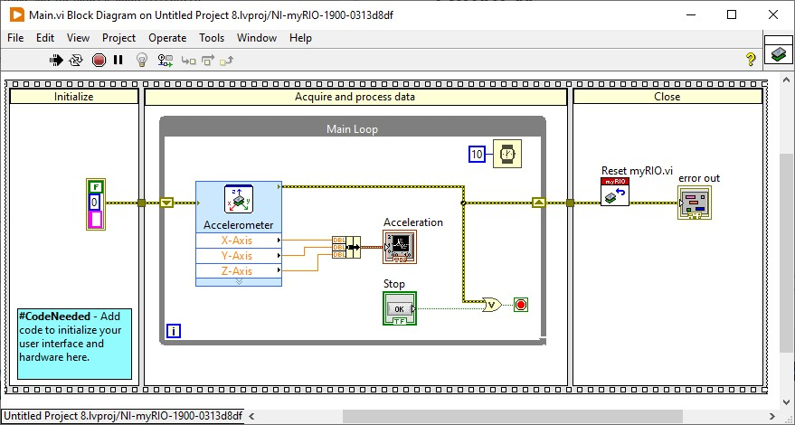
Debugging LabVIEW

Highlight Execution
- แสดงลำดับการไหลของ data ผ่าน node ต่างๆ
Probe
- แสดงข้อมูลส่งผ่านระหว่าง node
Breakpoint / Step
- หยุดการทำงานเมื่อ node มีข้อมูลครบ
- บังคับให้ทำงานทีละ node
LabVIEW quick tutorial
ลองสร้าง N-point moving average filter
- Delay loop + waveform chart + shift register + budle cluster + sub VI
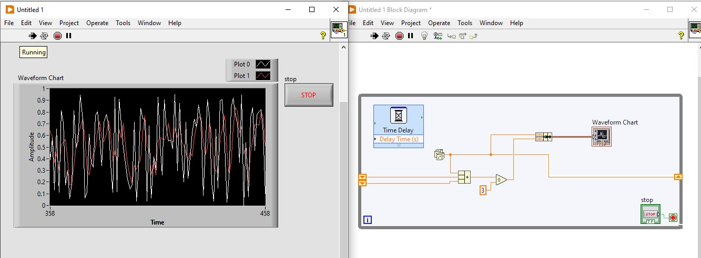
LabVIEW terminology
- Data types:
- Numeric: สีส้ม (DBL/SGL), สีน้ำเงิน (INT/UINT/enum)
- Boolean: สีเขียว
- Array: เส้นหนา (1D), เส้นคู่ (2D)
- String และ Cluster: สีชมพู
- Control flow:
- While: ทำงานตามเงื่อนไข
- For: N รอบ หรือตามจำนวนข้อมูล
- Case structure: if-else, switch-case
- SubVI:
- Connector Pane: Required, Recommend, Optional
- Timing:
- Loop + delay: ง่ายแต่ไม่แม่น
- Timed loop: ความแม่นยำ/ความละเอียดทางเวลา
- Block waiting: รอข้อมูลจาก HW
- Data passing:
- Shift register: ส่งข้อมูลข้าม loop
- Local variable: แชร์การเข้าถึง
- กลุ่ม synchronized function
- UI programming:
- Event structure: callback ของ UI event
- Property node: อัพเดท UI
LabVIEW quick tutorial
ลองสร้าง iteractive UI สำหรับประเมิน reaction time
- For loop + Event Structure + property node + array
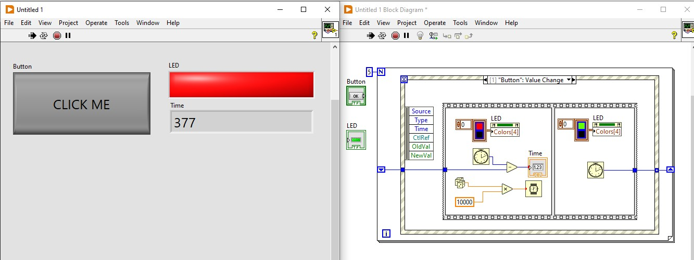
LabVIEW synchronization
- Notifier: send event → wait on event
- ใช้กลไก broadcast (1-to-many)
- Queue: enqueue msg → dequeue
- ทำงานแบบ FIFO
Resource protection
- Semaphore: acquire ← wait for release
Wait for every task
- Rendezvous: wait on → continue together
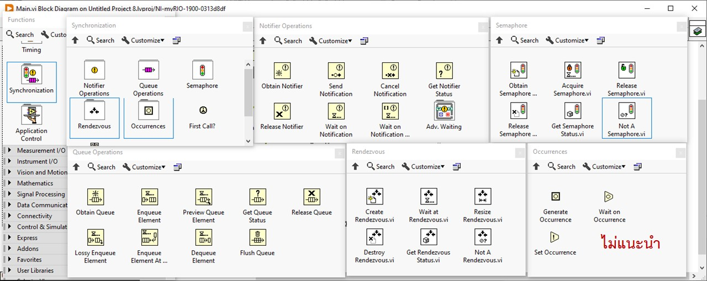
LabVIEW quick tutorial
ลองสร้าง multi-rate loop สำหรับวัดและแสดงผล
- Parallel loop + notifier
Pattern: state machine
Programming architecture that allows dynamic flow to states depending on values from previous states or user inputs
- Enum หรือ String เป็น state → shift register คงค่าไปรอบถัดไป
- Case structure อยู่ใน while loop
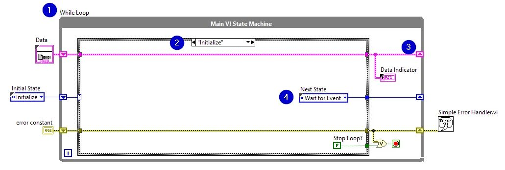
Pattern: producer/consumer
Data sharing architecture between multiple loops running at different rates.
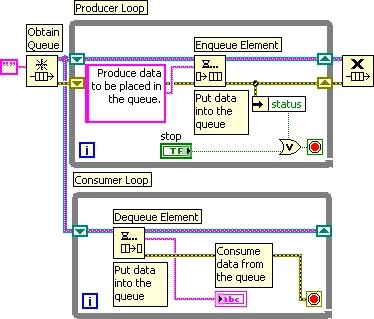
- Queue
- Loops with similar/different timing
- Data producing loops: enqueue
- Data consuming loops: dequeue
Pattern: Actor Framework
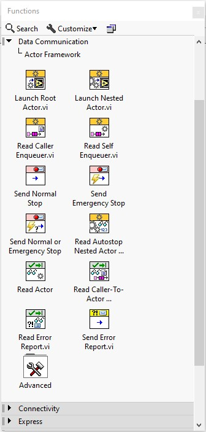
Set of reusable classes that provide common state and message handling functions for concurrent operations.
- Actor class: by-value object with encapsulated state
- Binded with queue as tree architecture
- Message class:
- Inherited Do.vi
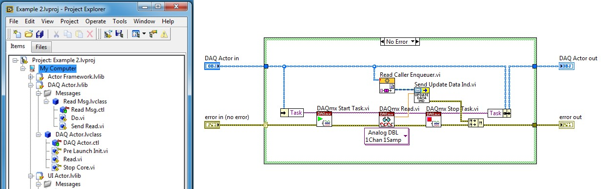
3. LabVIEW basics
LabVIEW fundamentals
LabVIEW UI components
LabVIEW data types
LabVIEW flow control
LabVIEW conditions
4. myRIO introduction
NI myRIO
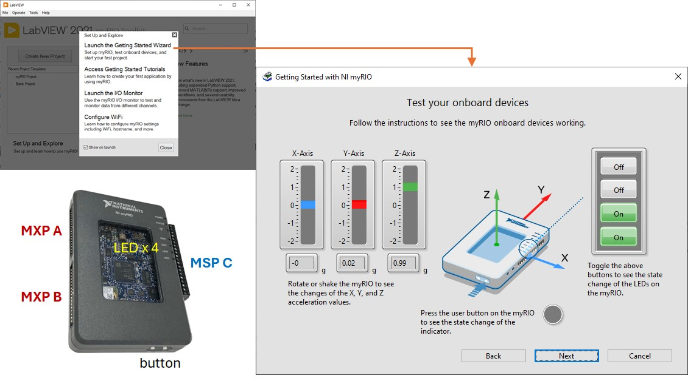
NI myRIO
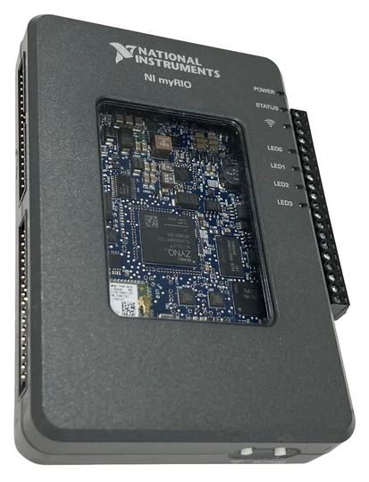
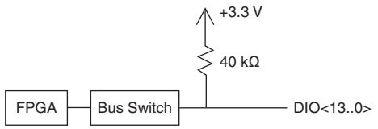
myRIO-1900
- Analog Input (AI):
- 12-bit, aggregated 500 kS/s
- MXP: 4 single-ended, 0-5V
- MSP: 2 differential, ±10V
- Analog output (AO):
- MXP A/B: 2 single-ended, 0-5V
- MSP C: 2 single-ended, ±10V
- Digital I/O (DIO):
- MXP (2 x 16 pins), MSP (8 pins)
myRIO hardware/software arch
Zynq-7010 SoC
- Dual-core ARM Cortex-A9:
- 256MB RAM + 512MB Flash
- Linux RT kernel 4.14
- SSH: admin:no password
- Artix-7 FPGA:
- 28k logic cells
- 240KB block RAM
myRIO in LabVIEW
myRIO quick tutorial
ลองสร้าง signal processing โดยใช้ analog loopback
- Analog input/output + parallel timed loop + notifier + Pt-by-Pt power spectrum
myRIO digital: I/O, timed, comm.
myRIO quick tutorial
ลองสร้าง UART pattern และตรวจจับด้วย PicoScope
- UART pattern + PicoScope range/trigger/decode
5. myRIO ⇆ ADS1115 workshop
Problem-based learning #1
ADS11115 ADC module as DUT
- 16-bit Delta-Sigma: upto 860 Samples/sec
- 2 differential inputs or 4 single-ended inputs
- Programmable Gain Amplifier (PGA): ±256mV to ±6.144V
- Supply voltage: upto 5.5V
- Comparator → ALERT/RDY pin
ADS1115 schematics
ADS1115 operations
Multiplexer (MUX):
- Singled-ended, differential
Programmable Gain Amplifier (PGA):
- \(LSB = \frac{FSR}{2^{16}}\)
I2C write → ADS1115
- I2C bus: half-duplex, master-slave (7-bit dev address + R/W bit)
- I2C device: registers for control/status/data
I2C read ← ADS1115
Programming ADS1115
Configure modes
- write(device address+W) + address pointer + (MSB/LSB) payload
Read data
- write(device address+W) + address pointer
- read(device address+R) + 2-byte payload
Device address (7bit) ขึ้นกับขา ADDR
- GND (1001000) หรือ VDD (1001001)
Address Pointer
| Register | Address | Function |
|---|---|---|
| Conversion | 00b | ข้อมูล 16 บิตล่าสุด |
| Config | 01b | ตั้งโหมด เลือกอินพุต ตั้งอัตราสุ่ม กำหนดย่าน ตั้ง comparator |
| Low Thres | 10b | กำหนดเงื่อนไขช่วงต่ำ → ALERT |
| High Thres | 11b | กำหนดเงื่อนไขช่วงสูง → ALERT |
LabVIEW + myRIO ⇆ ADS1115
Pin interfaces
| myRIO | ADS1115 |
|---|---|
| 1 (5V) | VCC |
| 8 (DGND) | GND |
| 32 (DIO14/I2C.SCL) | SCL |
| 34 (DIO15/I2C.SDA) | SDA |
| 11 (DIO0) | ADDR |
| 13 (DIO1) | ALRT |
| 2 (AO0) | A0 |
| 4 (AO1) | A1 |
LabVIEW + myRIO ⇆ ADS1115
เตรียม SubVI สำหรับ read/write register
Testing ADS1115 module
Spring-loaded pogo pins
Basic test
- Power-on test: VDD = 5V, GND
Digital test
- I2C comm test:
- Device address test: ADDR pin = 0/1
- Configuration test: write/read Config register
- ADC value test: start conversion, read data
Analog test
- Singled-ended reading: myRIO AO0 → A0 pin
- MUX swap reading: myRIO AO1 → A1 pin
- Differential reading: myRIO AO0/AO1 → A0/A1 pin
Pattern: state machine
Programming architecture that allows dynamic flow to states depending on values from previous states or user inputs
- Enum หรือ String เป็น state → shift register คงค่าไปรอบถัดไป
- Case structure อยู่ใน while loop
LabVIEW + myRIO ⇆ ADS1115
สร้าง VI สำหรับ I2C comm test
LabVIEW + myRIO ⇆ ADS1115
สร้าง VI สำหรับ ADS1115 A0 conversion

คอร์สอบรม BOC690121 ได้รับการสนับสนุนโดยโครงการ BOI STEM++ ปีงบประมาณ 2569